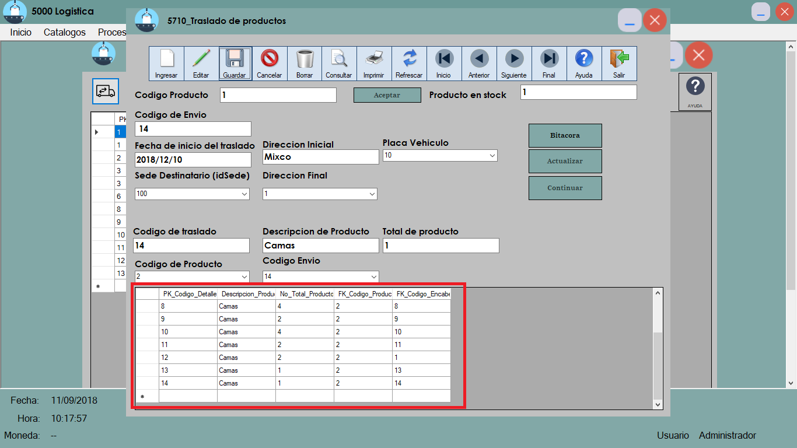

TRASLADO DE PRODUCTOS
Primeramente nos aparecera el login para poder ingresar al programa, para este ejemplo se usara el usuario "administrador" y contraseña "1234"

Se abrira la ventana del modulo de Logistica

Abriremos la pestaña de procesos y seleccionaremos la opcion de Traslado de productos

Aparecera la ventana donde podremos ver los envios que se han hecho
Para ingresar o modificar un traslado presionaremos el boton de Traslado de productos
Se abrira la ventana para poder ingresar o modificar el traslado
Para ingresar un traslado presionaremos el boton ingresar
ingresaremos el codigo de producto que queremos trasladar para poder ver si hay en estock
Seguidamente presionaremos el boton Aceptar
Aparecera en la tabla los productos que hay en estock
seguidamente daremos doble click en la sede donde hay productos en estock para poder realizar el traslado
Se desbloquearan los campos para poder realizar los productos, precederemos a llenar los primeros campos de traslados
*IMPORTANTE* para insertar la fecha esta debe estar en el siguiente formato: YYYY/MM/DD
Seguidamente daremos en el boton continuar
Se desbloquearan los campos para el detalle de traslado y los procederemos a llenar
Ya llenado los campos presionaremos el boton de guardar.
Veremos que el detalle se ha actualizado

Modificar Traslado
Para modificar el traslado presionaremos el boton de editar
Mostrara la tabla de donde daremos doble click en la fila que queremos actualizar, veremos que apareceran los campos seleccionados en los textbox correspondientes para actualizarlos
Presionaremos actualizar y veremos que nuestra tabla ha sido actualizada